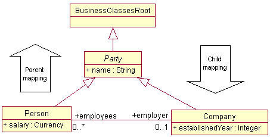

Illustrates the possibility to map the persistence of an abstract class to its children or to map child classes to their parent.
How to run
Mapping the persistence of a parent to its children improves the search in one of the child classes since the database only have to open one table to achieve this. The downside of this is if you want to perform a search in the parent class. To accomplish this the database have to open all child tables.
In this example the settings for Table mapping in the model editor is set to
<<Parent<< for the classes Jet and Prop,
and <<Children<< for the class Vehicle. The easiest way to view
the table structure that is the result of this is by checking the window
"Logging Activity:
Generating Persistent Storage" which becomes visible when you click
the button Create DB & Alias.
To fully understand the concept of the parent/child mapping, it's necessary to have some insight in how Bold for Delphi/Bold for C++ maps objects to tables (also known as Object-Relational mapping, or simply OR mapping).
The default mapping strategy is to create one table per inheritance level. The "artificial" class BusinessClassesRoot will get a table containing only two columns; instance ID and class ID. Obviously, if you have added persistent attributes or embedded relations to this class there will be more columns.

Considering the model above, there will be four tables in your database to represent the classes: Bold_Object (the default name for the root class table), Party, Person and Company. To get a Person object, three tables will be joined; Bold_Object, Party, Person. only the Person table will have a salary column, and only the Party table will have a name column.
The parent mapping Person and Company will result in the reduction of tables. Now there will only be two: Bold_Object and Party. Party will now contain the columns pertaining to its subclasses too. To retrieve a person, only the Bold_Object and Party table need o be joined.
Child mapping is the inverse of parent mapping, where the Name column of the party table will be distributed to all the subclasses' tables. To retrieve a person, two tables will be joined. However, to get all instances of Party, the situation is somewhat mre complex, as all Person instances will need to be retrieved, then all Company instances and finally these two sets combined. Luckily, that part is all automatic!
The setting of mapping does not in anyway reflect n the code you
write. It is solely an issue for the persistence mapper. It is thus safe and
sound to not worry about mapping in the early phases of development but wait a
while to see if there is a need to remap tables, and prepare some test
cases indicating what kind of speed gains can be achieved. What mapping makes
sense for you largely depends on your model, application usage pattern and
database engine.
Note! Please make sure to use the "Create DB & Alias" button before attempting to open the system for the first time. Once the database and alias is established you only have to use the "Open system" button when running the example program.